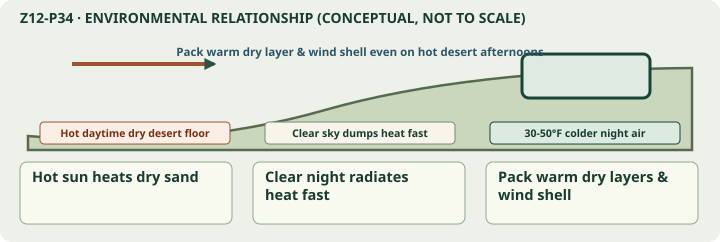

Z12-P34 · Extreme environments · New manuscript
Prepare for sharp desert night temperature drops and cold clear-sky radiation
Prevent unexpected desert hypothermia after sunset when dry air and cloudless skies dump daytime heat rapidly.
When it applies · Overnight desert camping, canyon stops and delayed arid day hikes across all seasons.
Equipment · Warm insulating jacket/fleece, beanie, wind shell and ground pad even on warm daytime desert outings.

Actions
- Expect massive diurnal temperature swings of 30°F–50°F+ after sunset in dry high deserts—dry air and clear skies radiate daytime warmth straight to space within hours of dusk.[X07, E15, E05]
- Pack a lightweight warm insulating layer, wind shell and ground barrier even when trailhead afternoon temperatures feel hot, especially if any risk of delay or overnight stranding exists.[E09, E05, X07]
- Remember that thin cotton soaked with afternoon sweat chills the core rapidly as desert evening winds turn cold.[E10, E06, X07]
Failure recognition · Starting a 75°F spring desert canyon hike in shorts and a cotton T-shirt, getting delayed past sunset and developing hypothermia in 38°F night wind.[E06, E09, E10]
Verify · Confirm warm dry insulation, wind protection and headlamp are packed for every desert hike longer than a brief stroll.[E09, E02, ED]
Stop or change course · Shivering, clumsy hands or chilled damp clothes at dusk require stopping in wind-sheltered ground insulation early rather than pushing tired into cold darkness.[E06, E05, E10]
Evidence and editorial notes
- E02 · NPS · Ten Essentials (current web edition)
- Section: Navigation; insulation; emergency shelter; emergency food and water · Conditions: Outdoor trips; adjust kit to season and route
Support: Carry essential systems including navigation, insulation, light, water and emergency shelter.
Limitations: Carrying items without practice or cold-weather verification does not ensure readiness. · Conflicting evidence: None; baseline kit system architecture.
Editorial note: Supports failure-mode packing and kit verification cards. · Specialist reviewer: Field education and search and rescue
Primary source · checked 2026-11-24 - E05 · NWS · What To Do If You're Caught in a Winter Storm (current web edition)
- Section: Outside and find shelter · Conditions: Cold, wet or windy winter conditions
Support: Block wind, stay dry and keep off cold ground. Keep exposure reduction separate from making a fire.
Limitations: Improvised windbreaks do not provide rated thermal protection or snow-load capacity. · Conflicting evidence: None; aligns with CDC-H.
Editorial note: Separates wind, ground, and moisture heat-loss pathways. · Specialist reviewer: Cold-weather shelter specialist
Primary source · checked 2026-11-24 - E06 · CDC · Preventing Hypothermia (current web edition)
- Section: Recognizing and treating hypothermia · Conditions: Cold wet exposure; signs such as confusion, slurred speech, fumbling or drowsiness
Support: Suspected hypothermia warrants prompt help and protection from further cooling. It can occur above freezing if wet or chilled.
Limitations: Early mild shivering can mask rapidly worsening judgment impairment. · Conflicting evidence: None; aligns with ARC and WMS guidance.
Editorial note: Anchors exposure-to-medical escalation thresholds. · Specialist reviewer: Wilderness medicine
Primary source · checked 2026-11-24 - E09 · NPS · Ten Essentials (current web edition)
- Section: Insulation; Emergency Shelter · Conditions: Weather, terrain and expected overnight risk
Support: Extra clothing and usable emergency shelter belong in the route-specific kit.
Limitations: Emergency bivies and space blankets trap condensation and tear easily if misused. · Conflicting evidence: None; requires inspecting and practicing shelter deployment.
Editorial note: Supports overnight emergency shelter readiness. · Specialist reviewer: Cold-weather shelter and field education
Primary source · checked 2026-11-24 - E10 · NWS · What To Do If You're Caught in a Winter Storm (current web edition)
- Section: Outside > Protect yourself from frostbite and hypothermia · Conditions: Outdoor winter storm
Support: Keep clothing dry and avoid overexertion. Wetness accelerates cooling.
Limitations: Cotton retains moisture and accelerates conductive and evaporative heat loss. · Conflicting evidence: None; reinforces moisture-management layering.
Editorial note: Links sweat management to overnight insulation integrity. · Specialist reviewer: Cold-weather shelter and wilderness medicine
Primary source · checked 2026-11-24 - E15 · NWS · Cold Weather Safety (current web edition)
- Section: Cold Weather Safety > Wind Chill and Dressing for Cold · Conditions: Cold, windy conditions where exposed skin cools rapidly
Support: Wind removes the thin warm air boundary layer around skin and permeable fabrics, sharply accelerating heat loss and frostbite onset; windproof outer shells and sheltered microclimates mitigate convective loss.
Limitations: Wind chill charts apply to exposed skin and do not change freezing point of water or equipment. · Conflicting evidence: None; clarifies physical mechanism of convective heat loss.
Editorial note: Supports wind-block geometry, shell layering, and wind-chill risk decisions. · Specialist reviewer: Cold-weather shelter and meteorology
Primary source · checked 2026-11-24 - X07 · NPS · Death Valley Safety (Desert Travel and Heat) (current web edition)
- Section: Death Valley Safety > Desert Heat, Dehydration, Flash Floods and Vehicle Breakdown · Conditions: Arid desert travel, canyon country and extreme summer heat
Support: Desert heat accelerates fluid and electrolyte loss rapidly, temperatures inside parked vehicles spike to fatal levels within minutes, dry washes flash-flood from distant storms and staying with a disabled road vehicle is generally safer than walking into extreme heat.
Limitations: Cell service is widely absent across desert basins; water needs can exceed 1 gallon/day dramatically during heat. · Conflicting evidence: None; aligns with CDC-HEAT and NWS-HEAT.
Editorial note: Core desert-environment evidence across Z12 heat/arid cards. · Specialist reviewer: Desert safety and emergency medicine
Primary source · checked 2026-11-24
Source lineage · NPS desert safety and NWS cold/heat; new manuscript · Classification · New manuscript.